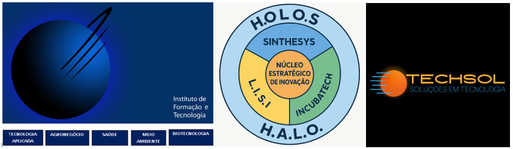

Vivemos tempos de intensa evolução tecnológica. As organizações procuram acompanhar esse ritmo e, na maioria das vezes, deparam-se com dificuldades advindas da sua própria estrutura.
Estar bem preparado neste momento é fundamental e a preparação é produto de um incessante trabalho de formação e profissionalização de equipes.
O IFT – Instituto de Formação e Tecnologia foi criado em 1996, dentro de uma concepção sistêmica, voltado para atender essas necessidades de formação das pessoas e, por conseguinte, das organizações. Nasceu com a determinação de, nos seus primeiros passos, estar presente no futuro.
O IFT é uma organização sem fins lucrativos, que mantém intercâmbio com instituições nacionais e internacionais altamente especializadas.
Constituído por pessoas físicas, o Instituto trabalha com recursos próprios ou provenientes de convênios com universidades, empresas estatais ou privadas, além de outros centros de pesquisa tecnológica e organizações congêneres. Seus principais produtos e serviços são:
O IFT entende que isso faz a diferença: soluções práticas e objetivas e a busca constante de ideias extraídas da vivência empresarial e da experiência de seus parceiros em diversas localidades, no Brasil e em outros países.
Utilizando-se de técnicas modernas e arrojadas, o IFT atua em áreas estratégicas do conhecimento humano:
Seu espectro de ação envolve desde estratégias corporativas até a gestão de projetos específicos.
Os serviços prestados pelo IFT incluem a transferência de conhecimentos e tecnologias aos profissionais das instituições contratantes e parceiras, pois eles são envolvidos na investigação, seleção e aplicação de soluções.
Os profissionais do IFT primam pela qualidade e criatividade – elementos propulsores do conhecimento humano.
ECOSSISTEMA IFT-TECHSOL
O ECOSSISTEMA IFT-TECHSOL representa a união entre a experiência de mais de duas décadas do IFT e a inovação tecnológica da Techsol. Juntos, promovem soluções integradas para instituições públicas, privadas e do terceiro setor.
Techsol L.I.S.I. Incubatech Sinthesys 